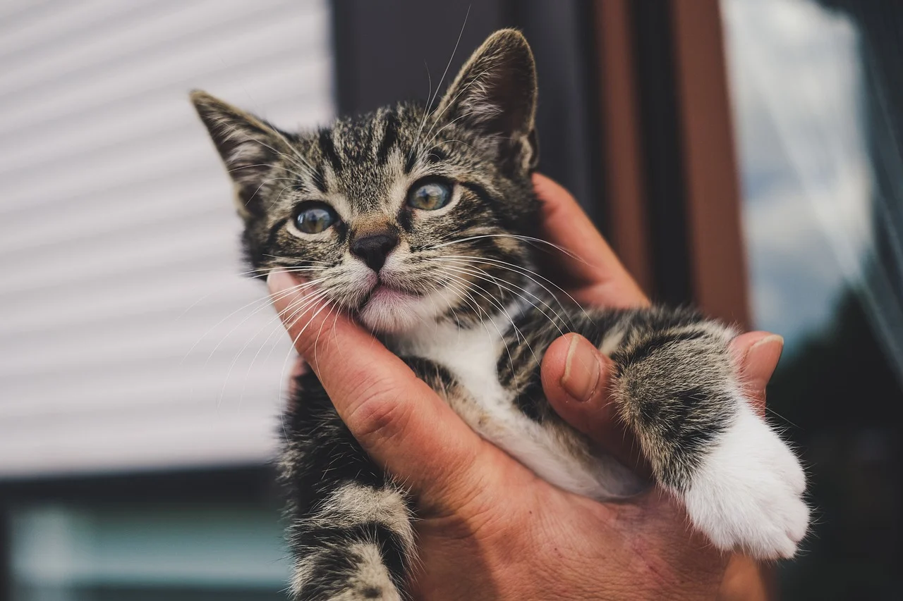
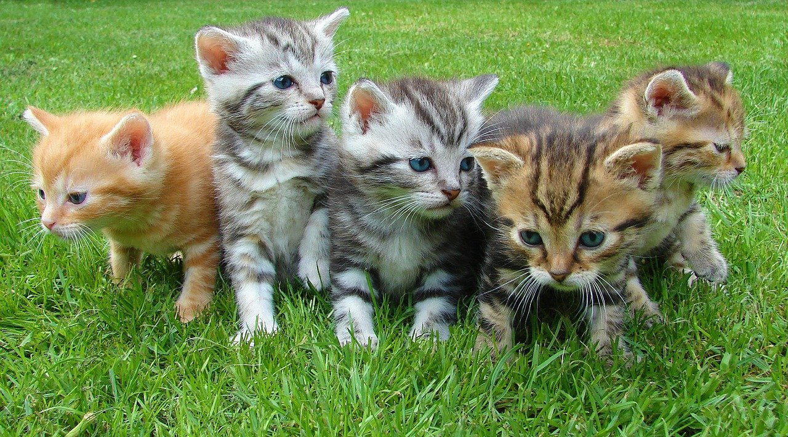

イエネコ
ネコ（猫）は、狭義には食肉目ネコ科ネコ属に分類されるリビアヤマネコ（ヨーロッパヤマネコ）が家畜化されたイエネコ（家猫、Felis silvestris catus）に対する通称である。イヌ（犬）と並ぶ代表的なペットとして日本を含め世界中で広く飼われている。より広義には、ヤマネコやネコ科動物全般を指すこともある（後述）。
🐈 1. 定義 Definition
イエネコの起源は、ネズミを捕獲させる目的で飼われ始めたリビアヤマネコの家畜化である[1]。リビアヤマネコは独立種 Felis lybica Forster, 1780とされることもあるが、ヨーロッパヤマネコの亜種 Felis silvestris lybica Forster, 1780ともされる[2]。その場合イエネコを含むヨーロッパヤマネコの学名は、記載が古いFelis catus Linnaeus, 1758となるのが命名法上の原則である。しかしこれを原則通りに運用すると様々な支障が出ることから、2003年にICZNの強権によりFelis silvestris Schreber, 1777をイエネコを含むヨーロッパヤマネコの学名として使用できることが認められた（Opinion 2027）[3]。つまりヨーロッパヤマネコの亜種としてのイエネコの学名は、Felis silvestris catus Linnaeus, 1758とすることができる。なおイエネコをヨーロッパヤマネコと別種として扱う場合には、イエネコの学名はFelis catusが正しい。 一方、広義の「ネコ」は、ネコ類（ネコ科動物）の一部、あるいはその全ての包括的分類を指し、家畜種のイエネコに加えて広義のヤマネコ類を含む。特に学術用語としては、英語の「cat」と同様、トラやライオンなどといった大型種を含む全てのネコ科動物を指すことがある。 以下、本項では特記なき限りネコ=イエネコとして解説する。
通商産業省
〒100-8901
東京都千代田区霞が関一丁目3番1号
03-0000-0000
OPEN 11:00-22:00［月曜定休］
🐈 2. 起源 Origin
イエネコは、形態学的分析を主とする伝統的な生物学的知見によって、以前からヨーロッパヤマネコの亜種リビアヤマネコ Felis silvestris lybicaが原種とされてきた[4]。20世紀後半から発展した分子系統学などによる新たな知見も、従来説を裏付ける形となった。米英独などの国際チームによる2007年6月29日の『サイエンス』誌（電子版）への発表では、世界のイエネコ計979匹をサンプルとしたミトコンドリアDNAの解析結果により、イエネコの祖先は約13万1000年前（更新世末期〈アレレード期（英語版）〉）に中東の砂漠などに生息していた亜種リビアヤマネコであることが判明した[5]。
総務省
〒100-8926
東京都千代田区霞が関2-1-2中央合同庁舎第2号館
03-0000-0000
OPEN 11:00-22:00［月曜定休］
🐈 3. 食性 Eating habits
ネコの本来の食性は肉食性である。たんぱく質や脂質を必要とし、半野生的な生活を送っているネコは、生きた小獣（ネズミ、ウサギなど）・小鳥・小型爬虫類（ヘビ、トカゲなど）・小型両生類（カエルなど）・小魚・小型節足動物（昆虫や蛛形類）といった小動物を捕食し、また飼育下に置かれているネコは与えられた獣肉・魚肉や、人工飼料（キャットフードなど）からそれらの栄養素を摂取する。
外務省
〒100-8919
東京都千代田区霞が関2-2-1
03-0000-0000
OPEN 11:00-22:00［月曜定休］